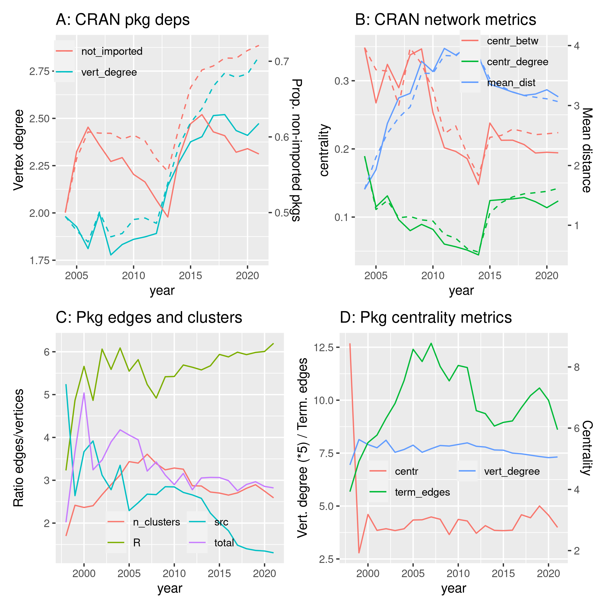

library ("pkgstatsAnalyses")
here <- here::here ()
v_data_dir <- file.path (here, "vignettes", "data")
logmean <- function (x, ...) {
10 ^ mean (log10 (x [which (x > 0)]), na.rm = TRUE)
}
datafile <- file.path (here, "data-raw", "pkgstats-results.Rds")
graph_data_file <- file.path (v_data_dir, "fig08-graph-metrics.Rds")
graph_intern_data_file <- file.path (v_data_dir, "fig08-graph-metrics-intern.Rds")
fig08_png <- file.path (here, "vignettes", "figures", "fig08.png")
calc_graph_data <- !file.exists (graph_data_file) & !file.exists (fig08_png)
calc_graph_data_intern <- !file.exists (graph_intern_data_file) & !file.exists (fig08_png)
# graph metrics for inter-package dependency networks
xraw <- load_pkgstats_data (datafile, raw = TRUE, latest = FALSE)
graph_one_year <- function (xraw, year = 2015, cran_by_year = TRUE) {
if (cran_by_year) {
x <- xraw |>
filter (year <= !!year) |>
group_by (package) |>
slice_max (date)
} else {
x <- xraw |>
filter (year == !!year)
}
x <- x [which (!(is.na (x$external_calls) | x$external_calls == "")), ]
x <- x [which (!(x$imports == "NA" | nchar (x$imports) == 0L)), ]
if (nrow (x) == 0) {
return (NULL)
}
imports <- lapply (seq (nrow (x)), function (i)
data.frame (to = x$package [i],
from = strsplit (x$imports [i], ",") [[1]]))
imports <- do.call (rbind, imports)
imports$from <- gsub ("^\\s*|\\s*$", "", imports$from)
imports$to <- gsub ("^\\s*|\\s*$", "", imports$to)
imports <- imports [which (!duplicated (imports)), ]
graph_from_data_frame (imports)
}
graph_metrics <- function (g) {
dd_in <- degree (g, mode = "in")
dd_in_zero <- length (which (dd_in < 1e-10)) / length (dd_in)
dd_in_mean_no0 <- logmean (dd_in [which (dd_in > 1e-10)])
dd_in_mean <- logmean (dd_in)
dd_out <- degree (g, mode = "out")
dd_out_zero <- length (which (dd_out < 1e-10)) / length (dd_out)
dd_out_mean_no0 <- logmean (dd_out [which (dd_out > 1e-10)])
dd_out_mean <- logmean (dd_out)
d <- distances (g)
d [!is.finite (d)] <- NA
stats <- apply (d, 2, function (i) c (median (i, na.rm = TRUE),
mean (i, na.rm = TRUE)))
c (dd_in_zero = dd_in_zero,
dd_in_mean_no0 = dd_in_mean_no0,
dd_in_mean = dd_in_mean,
dd_out_zero = dd_out_zero,
dd_out_mean_no0 = dd_out_mean_no0,
dd_out_mean = dd_out_mean,
re = reciprocity (g),
ad = assortativity_degree (g),
cb = centr_betw(g, directed = FALSE)$centralization,
cd = centr_degree(g)$centralization,
d_med = median (stats [1, ]),
d_mean = logmean (stats [2, ]))
}
years <- sort (unique (xraw$year))
dat <- lapply (years, function (y) {
g1 <- graph_one_year (xraw, y, cran_by_year = TRUE)
if (!is.null (g1)) {
g1 <- c (year = y, graph_metrics (g1), what = 0)
}
g2 <- graph_one_year (xraw, y, cran_by_year = FALSE)
if (!is.null (g2)) {
g2 <- c (year = y, graph_metrics (g2), what = 1)
}
return (rbind (g1, g2))
})
dat <- data.frame (do.call (rbind, dat))
dat$what [dat$what == 0] <- "cran_by_year"
dat$what [dat$what == 1] <- "annual"
saveRDS (dat, graph_data_file)
xraw <- load_pkgstats_data (datafile, raw = TRUE, latest = FALSE)
dat_one_year <- function (xraw, year = 2015) {
x <- xraw |>
filter (year <= !!year) |>
group_by (package) |>
slice_max (date)
c (year = year,
n_edges = logmean (x$n_edges, na.rm = TRUE),
n_edges_r = logmean (x$n_edges_r, na.rm = TRUE),
n_edges_src = logmean (x$n_edges_src, na.rm = TRUE),
n_edges_rel = logmean (x$n_edges / (x$n_fns_r + x$n_fns_src), na.rm = TRUE),
n_edges_rel_r = logmean (x$n_edges_r / x$n_fns_r, na.rm = TRUE),
n_edges_rel_src = logmean (x$n_edges_src / x$n_fns_src, na.rm = TRUE),
n_clusters = logmean (x$n_clusters, na.rm = TRUE),
centr_dir_mn = logmean (x$centrality_dir_mn, na.rm = TRUE),
centr_dir_md = logmean (x$centrality_dir_md, na.rm = TRUE),
centr_dir_mn_no0 = logmean (x$centrality_dir_mn_no0, na.rm = TRUE),
centr_dir_md_no0 = logmean (x$centrality_dir_md_no0, na.rm = TRUE),
centr_undir_mn = logmean (x$centrality_undir_mn, na.rm = TRUE),
centr_undir_md = logmean (x$centrality_undir_md, na.rm = TRUE),
centr_undir_mn_no0 = logmean (x$centrality_undir_mn_no0, na.rm = TRUE),
centr_undir_md_no0 = logmean (x$centrality_undir_md_no0, na.rm = TRUE),
central_edges_dir = logmean (x$num_terminal_edges_dir, na.rm = TRUE),
term_edges = logmean (x$num_terminal_edges_undir, na.rm = TRUE),
node_degree_mn = logmean (x$node_degree_mn, na.rm = TRUE),
node_degree_md = logmean (x$node_degree_md, na.rm = TRUE),
node_degree_max = logmean (x$node_degree_max, na.rm = TRUE))
}
years <- sort (unique (xraw$year))
dat <- lapply (years, function (y) dat_one_year (xraw, y))
dat <- data.frame (do.call (rbind, dat))
dat$what <- "cran_by_year"
xs <- xraw |>
group_by (year) |>
summarise (
n_edges = logmean (n_edges, na.rm = TRUE),
n_edges_r = logmean (n_edges_r, na.rm = TRUE),
n_edges_src = logmean (n_edges_src, na.rm = TRUE),
n_edges_rel = logmean (n_edges / (n_fns_r + n_fns_src), na.rm = TRUE),
n_edges_rel_r = logmean (n_edges_r / n_fns_r, na.rm = TRUE),
n_edges_rel_src = logmean (n_edges_src / n_fns_src, na.rm = TRUE),
n_clusters = logmean (n_clusters, na.rm = TRUE),
centr_dir_mn = logmean (centrality_dir_mn, na.rm = TRUE),
centr_dir_md = logmean (centrality_dir_md, na.rm = TRUE),
centr_dir_mn_no0 = logmean (centrality_dir_mn_no0, na.rm = TRUE),
centr_dir_md_no0 = logmean (centrality_dir_md_no0, na.rm = TRUE),
centr_undir_mn = logmean (centrality_undir_mn, na.rm = TRUE),
centr_undir_md = logmean (centrality_undir_md, na.rm = TRUE),
centr_undir_mn_no0 = logmean (centrality_undir_mn_no0, na.rm = TRUE),
centr_undir_md_no0 = logmean (centrality_undir_md_no0, na.rm = TRUE),
central_edges_dir = logmean (num_terminal_edges_dir, na.rm = TRUE),
term_edges = logmean (num_terminal_edges_undir, na.rm = TRUE),
node_degree_mn = logmean (node_degree_mn, na.rm = TRUE),
node_degree_md = logmean (node_degree_md, na.rm = TRUE),
node_degree_max = logmean (node_degree_max, na.rm = TRUE))
xs$what <- "annual"
saveRDS (rbind (dat, xs), graph_intern_data_file)
dat <- readRDS (graph_data_file)
dat_cran <- dat |> filter (what == "cran_by_year")
dat <- dat |> filter (what == "annual")
coeff_fig8_p1 <- max (dat$dd_in_zero) / max (dat$dd_in_mean)
colours_fig8_p1 <- c ("vert_degree" = "red",
"not_imported" = "blue")
fig8_p1 <- ggplot (dat, aes (x = year)) +
geom_line (aes (y = dd_in_mean, col = "vert_degree")) +
geom_line (aes (y = dd_in_zero / coeff_fig8_p1, col = "not_imported")) +
geom_line (data = dat_cran, aes (y = dd_in_mean, col = "vert_degree"), lty = 2) +
geom_line (data = dat_cran, aes (y = dd_in_zero / coeff_fig8_p1, col = "not_imported"), lty = 2) +
ylab ("Vertex degree") +
scale_y_continuous (
sec.axis = sec_axis (~.*coeff_fig8_p1, name = "Prop. non-imported pkgs")) +
ggtitle ("A: CRAN pkg deps") +
theme (legend.title = element_blank (),
legend.position = c (0.2, 0.9),
legend.background = element_rect(fill='transparent', colour='transparent'))
coeff_fig8_p2 <- max (dat$d_mean) / max (dat$cb)
colours_fig8_p2 <- c ("centr_betw" = "red",
"centr_degree" = "green",
"mean_dist" = "blue")
fig8_p2 <- ggplot (dat, aes (x = year)) +
geom_line (aes (y = cb, col = "centr_betw")) +
geom_line (aes (y = cd, col = "centr_degree")) +
geom_line (aes (y = d_mean / coeff_fig8_p2, col = "mean_dist")) +
geom_line (data = dat_cran, aes (y = cb, col = "centr_betw"), lty = 2) +
geom_line (data = dat_cran, aes (y = cd, col = "centr_degree"), lty = 2) +
geom_line (data = dat_cran, aes (y = d_mean / coeff_fig8_p2, col = "mean_dist"), lty = 2) +
ylab ("centrality") +
scale_y_continuous (
sec.axis = sec_axis (~.*coeff_fig8_p2, name = "Mean distance")) +
ggtitle ("B: CRAN network metrics") +
#guides (color = guide_legend (ncol = 2)) +
theme (legend.title = element_blank (),
legend.position = c (0.7, 0.9),
legend.background = element_rect(fill='transparent', colour='transparent'))
dat <- readRDS (graph_intern_data_file)
dat_cran <- dat |>
filter (what == "cran_by_year") |>
select (year, starts_with ("n_")) |>
rename (total = n_edges_rel, R = n_edges_rel_r, src = n_edges_rel_src) |>
select (year, total, R, src, n_clusters) |>
mutate (R = 10 * R, total = 10 * total) |>
pivot_longer (c (total, R, src, n_clusters))
fig8_p3 <- dat |>
filter (what == "annual") |>
select (year, starts_with ("n_")) |>
rename (total = n_edges_rel, R = n_edges_rel_r, src = n_edges_rel_src) |>
select (year, total, R, src, n_clusters) |>
mutate (R = 10 * R, total = 10 * total) |>
pivot_longer (c (total, R, src, n_clusters)) |>
ggplot (aes (x = year, y = value, colour = name)) +
geom_line () +
#geom_line (data = dat_cran, lty = 2) +
ylab ("Ratio edges/vertices") +
ggtitle ("C: Pkg edges and clusters") +
guides (color = guide_legend (ncol = 2)) +
theme (legend.title = element_blank (),
legend.position = c (0.5, 0.15),
legend.background = element_rect(fill='transparent', colour='transparent'))
s <- dat |>
filter (what == "annual") |>
select (year, n_edges_rel) |>
rename (n = n_edges_rel)
s <- lm (n ~ year, data = s)$coefficients [2]
#1 / s
dat <- readRDS (graph_intern_data_file)
dat_cran <- dat |>
filter (what == "cran_by_year") |>
select (year, centr_dir_mn, node_degree_mn, term_edges) |>
rename (centr = centr_dir_mn,
vert_degree = node_degree_mn) |>
mutate (vert_degree = vert_degree * 10)
coeff_fig8_p4 <- max (dat$term_edges) / max (dat$centr_dir_mn)
coeff_fig8_p4 <- max (dat$centr_dir_mn) / max (dat$term_edges)
colours_fig8_p4 <- c ("centr" = "red",
"vert_degree" = "green",
"term_edges" = "blue")
fig8_p4 <- dat |>
filter (what == "annual") |>
select (year, centr_dir_mn, node_degree_mn, term_edges) |>
rename (centr = centr_dir_mn,
vert_degree = node_degree_mn) |>
mutate (vert_degree = vert_degree * 5) |>
ggplot (aes (x = year)) +
geom_line (aes (y = centr / coeff_fig8_p4, col = "centr")) +
geom_line (aes (y = vert_degree, col = "vert_degree")) +
geom_line (aes (y = term_edges, col = "term_edges")) +
#geom_line (data = dat_cran, aes (y = centr_undir, col = "centr_undir"), lty = 2) +
#geom_line (data = dat_cran, aes (y = centr_dir, col = "centr_dir"), lty = 2) +
#geom_line (data = dat_cran, aes (y = vert_degree / coeff_fig8_p4, col = "vert_degree"), lty = 2) +
#geom_line (data = dat_cran, aes (y = term_edges / coeff_fig8_p4, col = "term_edges"), lty = 2) +
ylab ("Vert. degree (*5) / Term. edges") +
scale_y_continuous (
sec.axis = sec_axis (~.*coeff_fig8_p4, name = "Centrality")) +
ggtitle ("D: Pkg centrality metrics") +
guides (color = guide_legend (ncol = 2)) +
theme (legend.title = element_blank (),
legend.position = c (0.5, 0.37),
legend.background = element_rect(fill='transparent', colour='transparent'))

Figure 8 Network metrics for (A-B) the CRAN dependency network, and (C-D) Function call networks within packages.